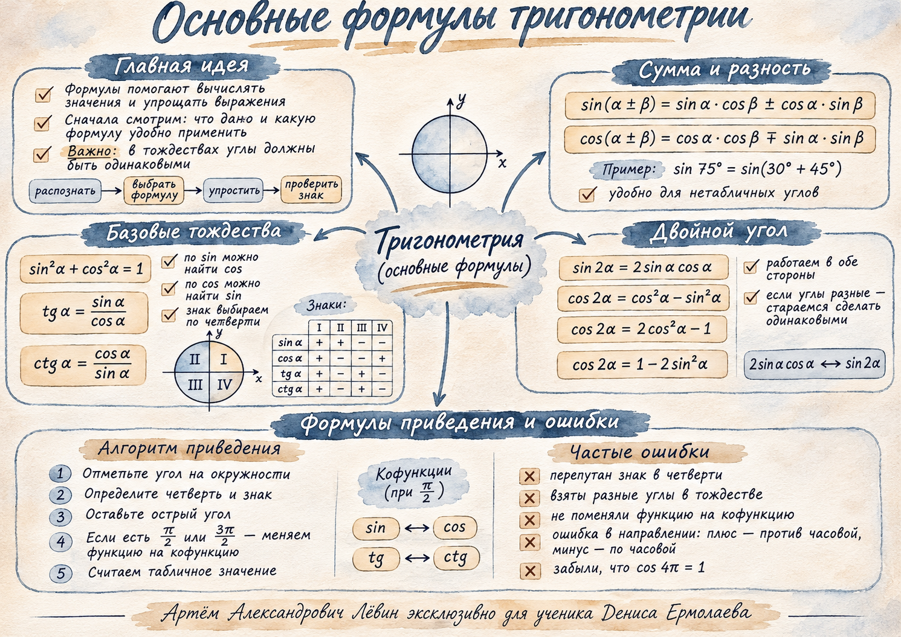

16.11.2026 / МАТЕМАТИКА / ПРОФИЛЬНЫЙ ЕГЭ
Формулы
тригонометрии.
От основного тождества до формул приведения: выбираем нужную формулу, проверяем знак по четверти и сокращаем вычисления.
Маршрут: изучите формулы, исследуйте единичную окружность, разберите типичные ошибки и решите 10 заданий пути А.

Основное тождество
Зная синус, можно найти косинус, и наоборот. Знак выбирают по четверти.
- Основная формулаУ синуса и косинуса один и тот же аргумент.
- Тангенс и котангенсЗнаменатель должен быть ненулевым.
- Любая константа через тождество
Четверти и знаки
Синус — вертикальная координата, косинус — горизонтальная. Положительный поворот идёт против часовой стрелки.
| Функция | I | II | III | IV |
|---|---|---|---|---|
| sin | + | + | − | − |
| cos | + | − | − | + |
| tg / ctg | + | − | + | − |
ИНТЕРАКТИВ / ЕДИНИЧНАЯ ОКРУЖНОСТЬ
Шаг ползунка — пять градусов.
Сумма и разность
Нетабличный угол можно представить как сумму или разность табличных.
- Синус
- Косинус
Формулы двойного угла
Пользуйтесь формулами в обе стороны: для раскрытия и для сворачивания.
Формулы приведения
Отложите основной угол, затем малый поворот с его собственным знаком.
- Сведите полный поворот к удобному углу.
- Найдите четверть и знак исходной функции.
- При сдвиге на нечётное кратное половины π перейдите к кофункции: sin ↔ cos, tg ↔ ctg.
- Оставьте острый угол, вычислите табличное значение и проверьте ограничения.
- Поворот на полные обороты
- Разные направления
- Кофункция и ОДЗВерно при .
Типичные ошибки
Последняя проверка перед записью ответа.
- Не проверен знак по четверти.
- Синус и косинус взяты с разными аргументами.
- Пропущен множитель два в двойном угле.
- Знак первого поворота ошибочно распространили на второй.
- Забыли поменять функцию на кофункцию при сдвиге на половину π.
- Сократили множитель, который может равняться нулю.
Тренировка · 10 задач
Путь А, от простого к сложному. Каждую задачу решите самостоятельно, затем раскройте ответ.
- 1Тождество
Показать ответ
Используйте основное тождество.
- 2Знак по четвертиДано , . Найдите , , .
Показать ответ
, ,Во второй четверти косинус отрицателен.
- 3Формула разности
Показать ответ
Разложите угол на 45° и 30°.
- 4Периодичность
Показать ответ
Уберите целое число полных оборотов.
- 5Двойной угол
Показать ответ
Компенсируйте отсутствующую двойку.
- 6Сокращение
Показать ответ
, приДеление допустимо только при ненулевом знаменателе.
- 7Формулы приведения
Показать ответ
Проследите оба поворота.
- 8Переход к кофункции
Показать ответ
, приСдвиг на половину π меняет функцию.
- 9Выбор формы косинуса
Показать ответ
Разность квадратов сворачивается в косинус двойного угла.
- 10Составное преобразование
Показать ответ
, приПроверьте, где исходное выражение определено.
Материалы занятия
Пособие, исходник и акварельный постер уже размещены в кабинете.
Скачать пособие · LaTeX · Акварельный постер
